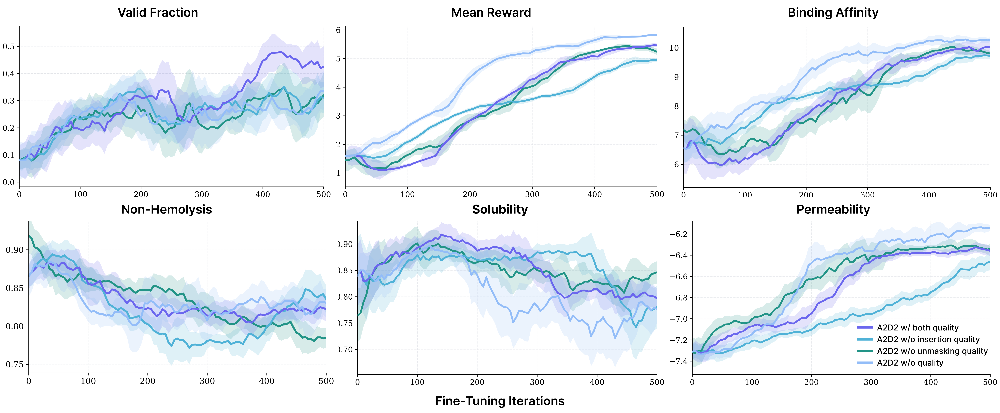

Abstract
Discrete diffusion models offer a simple and stable likelihood-based framework for sequence generation, recently extended to any-length settings via token insertion. Principled reward-guided fine-tuning for any-length discrete diffusion, however, remains largely unexplored.
We introduce Fine-Tuning Any-Length Discrete Diffusion for Adaptive Decoding (A2D2), a unified framework for reward-guided fine-tuning of any-length discrete diffusion models via joint optimization of the insertion and unmasking policies together with a quality-based inference schedule. We derive the Radon–Nikodym derivative for the joint insertion–unmasking path measures, enabling theoretically guaranteed convergence to the intractable reward-tilted sequence distribution without requiring target samples. Building on this, we establish unmasking and insertion quality as tractable approaches for minimizing decoding error and introduce the Adaptive Joint Decoding (AJD) loss, which provably yields the optimal path measure that generates the reward-tilted distribution. Empirically, A2D2 improves reward optimization while enhancing generation flexibility and accuracy over prior fixed-length fine-tuning and inference-time guidance methods.
Key Contributions
- We introduce A2D2, a unified framework for reward-guided fine-tuning of any-length discrete diffusion models via joint optimization of the insertion and unmasking policies and a quality-based inference schedule.
- We derive the Radon–Nikodym derivative for the joint insertion and unmasking path measures, enabling theoretically-guaranteed convergence to an intractable reward-tilted sequence distribution.
- We establish unmasking and insertion quality as tractable methods of minimizing compounding parallelization error (CPE) and introduce the Adaptive Joint Decoding (AJD) loss, which provably yields the optimal path measure that minimizes error and generates the reward-tilted distribution.
- We demonstrate that A2D2 simultaneously optimizes rewards while enhancing generation flexibility and accuracy over prior fixed-length fine-tuning and inference-time guidance approaches across drug-like small molecule design, multi-objective therapeutic peptide generation, and language reasoning.
Overview of Framework
🃏 Defining Unmasking and Insertion Quality 🔮
A key challenge in any-length discrete diffusion is that model performance is highly sensitive to the chosen insertion and unmasking trajectory. We formally define the quality of a step taken in the decoding process.
Unmasking Quality
We define the unmasking quality as the probability that the unmasked token is sampled from the unmasking posterior given the context from the rest of the sequence:
We train a parameterized model $\mu_\phi : \mathcal{X} \to [0,1]$ to predict the unmasking quality by minimizing the Unmasking Quality Loss (UQL):
During inference, the unmasking quality determines which tokens are inconsistent and should be re-masked. We prove that maximizing unmasking quality upper-bounds the probability of successful parallel unmasking, directly minimizing the compounding parallelization error (CPE) — the gap between sequential single-token unmasking and the factorized approximation made when unmasking many tokens at once.
Insertion Quality
The insertion quality is defined as the probability that an inserted mask token is likely to be decoded into a true token in the corresponding gap of the target sequence:
We train a parameterized model $\nu_\phi$ by minimizing the Insertion Quality Loss (IQL):
Maximizing insertion quality provides an upper bound for the probability of reconstructing a clean sequence, justifying its use for adaptive removal of low-quality insertions.
🃏 Adaptive Joint Decoding Loss 🔮
We define the optimal reward-tilted path measure for any-length MDMs as:
To optimize toward $\mathbb{P}^\star$, we derive the Radon–Nikodym derivative for the joint insertion–unmasking CTMC path measures. This yields our Adaptive Joint Decoding (AJD) loss:
where $W^v := \log \frac{\mathrm{d}\mathbb{P}^\star}{\mathrm{d}\mathbb{P}^v}$ is the log Radon–Nikodym derivative used to reweight trajectories sampled from an arbitrary path measure $\mathbb{P}^v$ toward the target, and the normalizing constant is approximated as $Z \approx \mathbb{E}_{\mathbb{P}^v}[e^{W^v}]$.
The AJD loss provably yields the optimal unmasking and insertion generators that minimize trajectory-induced error while generating the reward-tilted distribution. It jointly optimizes:
- The unmasking policy $f_\theta$ and insertion policy $g_\theta$
- The unmasking quality predictor $\mu_\phi$ and insertion quality predictor $\nu_\phi$
🃏 Off-Policy RL & Alternating Optimization 🔮
We optimize the AJD loss with an off-policy RL strategy. Each iteration samples a batch of sequences $\boldsymbol{x}_1$ from the detached path measure $\mathbb{P}^{\bar\theta, \bar\phi}$, computes their log RND $W^{\bar\theta,\bar\phi}$, and stores them in a replay buffer; intermediate states are then drawn from the interpolant to evaluate the AJD loss. Because the policy parameters $\theta$ vastly outnumber the quality-head parameters $\phi$, we alternate between updating $\theta$ (with $\phi$ frozen) and $\phi$ (with $\theta$ frozen). This schedule also acts as implicit loss balancing, so the weighting $\lambda_{\text{quality}}$ never needs tuning.
🃏 Adaptive Inference 🔮
Starting from an empty sequence, at each discrete time step $[t_k, t_{k+1}]$ A2D2 performs:
- Adaptive Unmasking: Sample tokens to unmask via $f_\theta$, predict unmasking quality via $\mu_\phi$, and re-mask low-quality tokens that fall below a threshold (or until the expected number of masked tokens is reached).
- Adaptive Insertion: Insert masks by sampling counts $I^\ell_t \sim \text{Poisson}(g_\theta(\boldsymbol{x}_t,t)[\ell]\cdot\Delta t)$ per gap, predict insertion quality via $\nu_\phi$, and remove low-quality insertions.
Generation stops when no masks remain and the insertion expectation falls below $0.5$, or when the total number of time steps is reached.
Experiments
We evaluate A2D2 on three reward-guided sequence generation tasks where any-order, any-length discrete diffusion is particularly well-suited: drug-like small molecule design, multi-objective therapeutic peptide generation, and language reasoning for math word problems and code infilling.
Drug-Like Small Molecule Design 🧪
We pre-train an any-length MDM on the SAFE dataset (~950M molecules from ZINC and Unichem in SAFE notation, $V=1880$) and fine-tune with A2D2 using QED and synthetic accessibility (SA) as rewards. We report quality (fraction of valid, unique, drug-like, and synthesizable molecules), validity, uniqueness, and diversity, and benchmark against GenMol, the state-of-the-art fixed-length masked diffusion model for SAFE generation, along with ablations that remove the insertion and/or unmasking quality predictors.
Table 1: Drug-like small molecule design results. Metrics are computed over 1000 generated molecules, with mean and standard deviation across 3 seeds. Highlighted rows use the any-length model; the A2D2 fine-tuned variants are shown in dark blue (the A2D2 (w/ both quality) row is the full model with both quality predictors).
| Method | Validity (% total) | Uniqueness (% valid) | Quality (% total) | QED (↑) | SA (↓) | Diversity (↑) |
|---|---|---|---|---|---|---|
| GenMol w/o confidence | 98.467 ±0.094 | 99.763 ±0.048 | 73.667 ±1.159 | 0.763 ±0.002 | 3.024 ±0.017 | 0.859 ±0.000 |
| GenMol w/ confidence | 99.733 ±0.047 | 99.532 ±0.125 | 84.000 ±0.566 | 0.813 ±0.004 | 2.881 ±0.020 | 0.817 ±0.000 |
| Pre-trained (Any Length) | 95.800 ±0.294 | 99.582 ±0.086 | 44.167 ±0.574 | 0.641 ±0.002 | 3.401 ±0.032 | 0.908 ±0.000 |
| A2D2 w/o quality | 96.400 ±0.535 | 62.484 ±0.452 | 76.067 ±0.896 | 0.795 ±0.005 | 2.306 ±0.024 | 0.730 ±0.003 |
| A2D2 w/o insertion quality | 92.200 ±0.082 | 93.746 ±0.335 | 71.067 ±0.411 | 0.752 ±0.003 | 2.654 ±0.014 | 0.832 ±0.001 |
| A2D2 w/o unmasking quality | 98.600 ±0.082 | 85.801 ±0.387 | 82.367 ±0.736 | 0.818 ±0.003 | 2.753 ±0.026 | 0.789 ±0.002 |
| A2D2 (w/ both quality) | 94.533 ±0.665 | 93.695 ±0.925 | 71.300 ±0.852 | 0.762 ±0.004 | 2.870 ±0.018 | 0.843 ±0.001 |
Multi-Objective Therapeutic Peptide Generation 💉
We pre-train an any-length MDM on 11 million peptide SMILES (CycPeptMPDB, SmProt, and CycloPs) and fine-tune with A2D2 on five therapeutic properties: binding affinity to a target protein, solubility, non-hemolysis, non-fouling, and membrane permeability. As no prior work addresses guidance or fine-tuning for any-length discrete diffusion, we compare against fixed-length baselines: Multi-Objective Guidance (PepTune), inference-time guidance via Monte Carlo Tree Guidance, and Off-Policy RL (TR2-D2), fixed-length RL fine-tuning.

Fine-tuning any-length MDMs with the AJD weighted loss yields substantial reward gains across all objectives, with or without quality-based adaptive inference. At equal sampling steps, A2D2 outperforms the any-length pre-trained baseline by a wide margin on every property and surpasses both the fixed-length RL fine-tuning and the substantially more expensive guidance baselines on almost all objectives — for example, raising TfR binding affinity from 7.756 to 10.190 — all without inference-time search. Crucially, quality-based adaptive inference markedly improves sequence validity while optimizing the same rewards: A2D2 reaches 48.6% validity on TfR, nearly a fivefold improvement over the any-length pre-trained model.
Table 2: Multi-objective peptide design results. Metrics are computed over 1000 generated peptides (100 Pareto-optimal sequences for multi-objective guidance), with mean and standard deviation across 3 seeds. Highlighted rows are A2D2 variations (the A2D2 (w/ both quality) row is the full model). *Only valid sequences are added to the optimal set for guidance.
| Target | Method | Validity (%) | Binding Affinity (↑) | Solubility (↑) | Non-hemolysis (↑) | Non-fouling (↑) | Permeability (↑) |
|---|---|---|---|---|---|---|---|
| TfR | Pre-trained (Fixed) | 32.446 ±0.662 | 8.776 ±0.023 | 0.707 ±0.001 | 0.901 ±0.003 | 0.215 ±0.001 | -7.145 ±0.003 |
| Pre-trained (Any) | 10.064 ±0.360 | 7.756 ±0.015 | 0.689 ±0.010 | 0.851 ±0.001 | 0.169 ±0.004 | -7.185 ±0.009 | |
| Multi-Objective Guidance (Fixed) | N/A* | 9.043 ±0.168 | 0.717 ±0.004 | 0.897 ±0.009 | 0.206 ±0.001 | -7.126 ±0.004 | |
| Off-Policy RL (Fixed) | 33.433 ±1.190 | 10.614 ±0.011 | 0.655 ±0.004 | 0.810 ±0.002 | 0.224 ±0.002 | -7.109 ±0.005 | |
| A2D2 w/o quality | 41.267 ±1.520 | 10.241 ±0.012 | 0.792 ±0.011 | 0.831 ±0.004 | 0.096 ±0.001 | -6.102 ±0.006 | |
| A2D2 (w/ both quality) | 48.600 ±1.445 | 10.190 ±0.033 | 0.776 ±0.003 | 0.831 ±0.003 | 0.118 ±0.002 | -6.338 ±0.003 | |
| GLP-1R | Pre-trained (Fixed) | 32.446 ±0.662 | 8.781 ±0.018 | 0.707 ±0.001 | 0.901 ±0.003 | 0.215 ±0.001 | -7.145 ±0.003 |
| Pre-trained (Any) | 10.064 ±0.360 | 8.008 ±0.019 | 0.689 ±0.010 | 0.851 ±0.001 | 0.169 ±0.004 | -7.185 ±0.009 | |
| Multi-Objective Guidance (Fixed) | N/A* | 8.897 ±0.041 | 0.721 ±0.010 | 0.896 ±0.015 | 0.214 ±0.014 | -7.111 ±0.025 | |
| Off-Policy RL (Fixed) | 48.767 ±0.492 | 9.377 ±0.025 | 0.684 ±0.003 | 0.804 ±0.010 | 0.247 ±0.002 | -7.019 ±0.009 | |
| A2D2 w/o quality | 25.033 ±2.014 | 9.698 ±0.003 | 0.830 ±0.003 | 0.849 ±0.004 | 0.618 ±0.006 | -7.272 ±0.003 | |
| A2D2 (w/ both quality) | 29.167 ±1.634 | 9.520 ±0.017 | 0.854 ±0.002 | 0.840 ±0.002 | 0.601 ±0.007 | -7.209 ±0.008 |
Language Reasoning 🧠
We adapt the 8B-parameter LLaDA-8B-Base fixed-length MDM into an any-length MDM by adding time-embedding layers and an insertion head and training LoRA adapters on OpenWebText and Proof-Pile-2. After instruction fine-tuning for math word problems (GSM8K) and code infilling (HumanEval-infill), we apply A2D2 RL fine-tuning and compare against the Pre-trained + IFT baseline across matched inference budgets.
Across both reasoning tasks, A2D2 yields large gains at every inference budget. On GSM8K, it raises Pass@1 from 35.71% to 60.96% at 128 sampling steps (a 25.3-point improvement) and exceeds the baseline's strongest result (41.39% at 1024 steps) by ~20 points while using a fraction of the steps — concentrating accuracy in the low-sampling-step regime. On HumanEval infilling, A2D2 improves exact match from 44.14% to 49.37% at 128 steps and from 48.89% to 57.12% at 1024 steps, with performance increasing monotonically in the number of steps. This mirrors the gains observed in the molecule and peptide settings, demonstrating that A2D2 simultaneously improves accuracy and decoding efficiency.
Table 3: Reasoning results. GSM8K is evaluated with Pass@1 (%) over 1319 questions; code infilling with exact match (%) over 1033 examples. Highlighted rows are A2D2.
| Benchmark | Method | 128 | 256 | 512 | 1024 |
|---|---|---|---|---|---|
| GSM8K (Pass@1) |
Pre-trained + IFT | 35.71 | 37.98 | 39.88 | 41.39 |
| A2D2 | 60.96 | 61.03 | 57.54 | 57.62 | |
| HumanEval (infill EM) |
Pre-trained + IFT | 44.14 | 44.82 | 47.53 | 48.89 |
| A2D2 | 49.37 | 53.44 | 53.73 | 57.12 |
BibTeX
@article{tang2026a2d2,
title={A2D2: Fine-Tuning Any-Length Discrete Diffusion for Adaptive Decoding},
author={Sophia Tang and Yuchen Zhu and Molei Tao and Pranam Chatterjee},
journal={arXiv preprint arXiv:2606.13565},
year={2026}
}